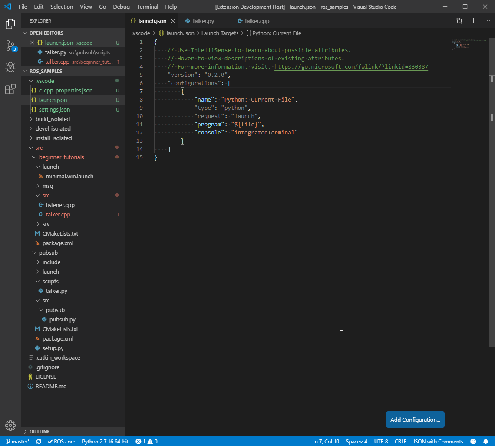
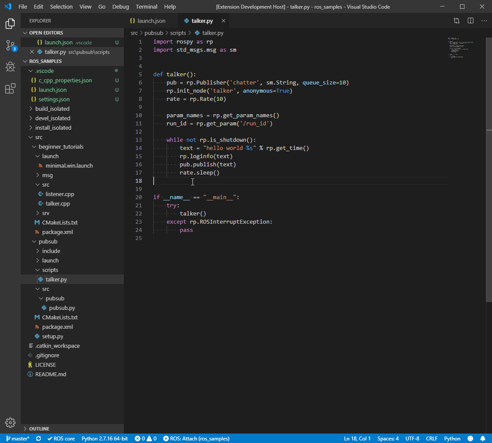
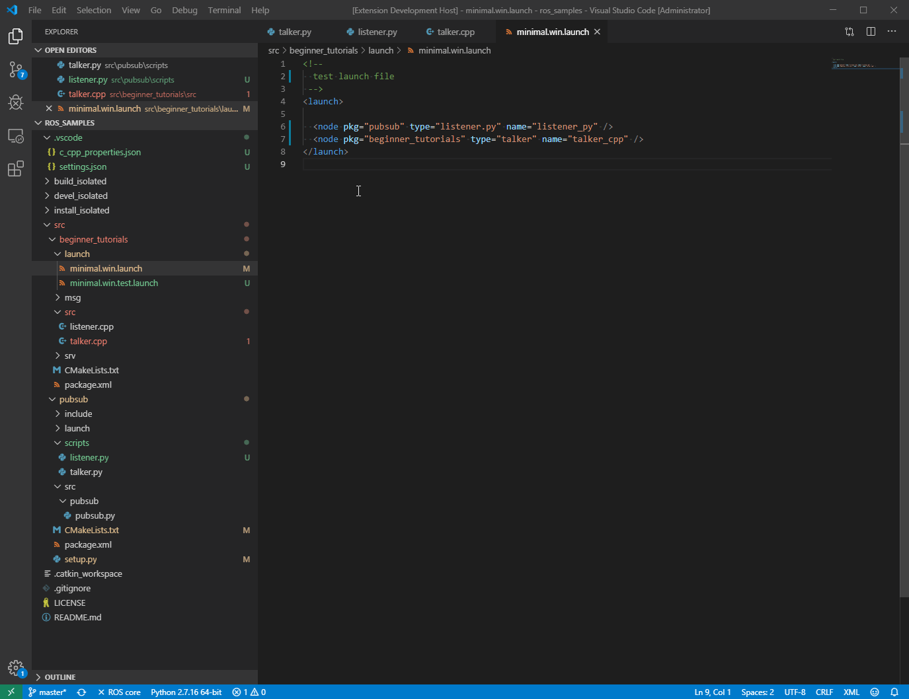
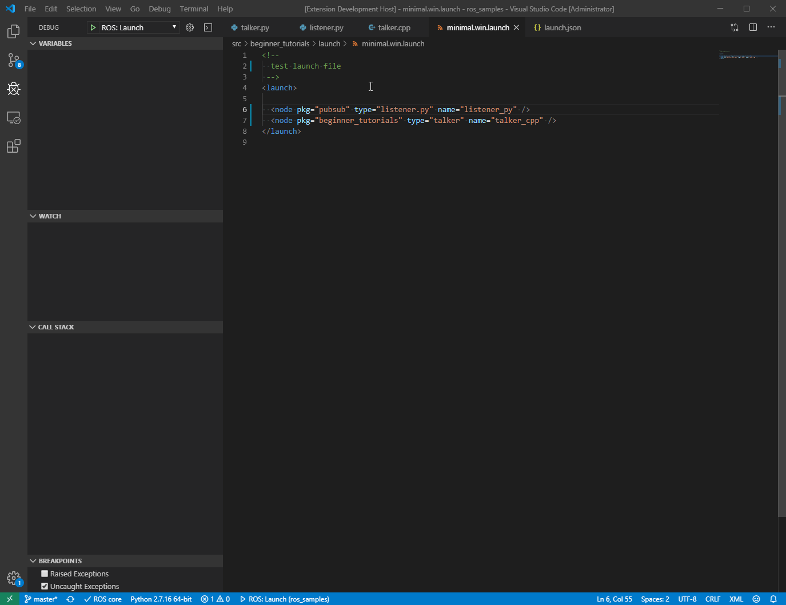

Debug ROS Nodes
One of the key goals of vscode-ros is to provide a streamlined debugging experience for ROS nodes.
To achieve this, this extension aims to help developers utilize the debugging capabilities provided by Visual Studio Code.
This document covers instructions of how to use such functionalities.
Attach
vscode-ros enables a bootstrapped debugging experience for debugging a ROS (Python or C++) node by attaching to the process.
To get started, create a ros-type debug configuration with an attach request: (use Ctrl-Space to bring up the autocomplete dropdown)

Attaching to a Python node

Attaching to a C++ node

Launch
vscode-ros enables a streamlined debugging experience for debugging a ROS (Python or C++) node in a ROS launch file similar to a native debug flow.
To get started, create a ros-type debug configuration with a launch request:

Launch and debug Python and C++ nodes

Note
- Debugging functionality provided by
vscode-roshas dependencies on VS Code’s C++ and Python extensions, and those have dependencies on the version of VS Code. To ensure everything works as expected, please make sure to have everything up-to-date. - To debug a C++ executable, please make sure the binary is built with debug symbols (e.g.
-DCMAKE_BUILD_TYPE=RelWithDebInfo, read more about CMAKE_BUILD_TYPE here). - To use VS Code's C++ extension with MSVC on Windows, please make sure the VS Code instance is launched from a Visual Studio command prompt.